")
Farming - Seeds
Introduction | Olivia's Seed Stall | Birds' nests | Fruit and Vegetables
Flowers | Herbs | Hops | Bushes | Fruit Trees | Trees | Special Trees
Flowers | Herbs | Hops | Bushes | Fruit Trees | Trees | Special Trees
Introduction
There are many different seeds available within RuneScape, see the tables below for how to obtain specific seeds. Some seeds may be found by drops, while others may require you to steal them from farmers, master farmers or stalls - see the Thieving Guide for more information.
The length of time that your plants take to grow will vary depending on what you are trying to grow. Some may take under an hour, while others may take hours!
Other ways of obtaining seeds include:
- Get them with crops growing in fields when you harvest them (this applies to the low level crops)
- A reward when you fulfil favours for the Wise Old Man
- Traded with players
Olivia's Seed Stall

Birds' Nest
Fruit and Vegetables
| Seed | Plant | Produce | Acquired From |
Level Required |
Planting Experience |
Harvesting Experience |
| 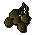 Potato seeds |
Potato | 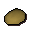 Potato |
Farmer Master Farmer Bought/Stolen from Olivia Monster drop |
1 |
8 | 9 |
![[image]](../../img/main/kbase/items/seeds/onion.gif) Onion seeds |
Onion | ![[image]](../../img/main/kbase/items/offspring/onion.gif) Onion |
Master Farmer Bought/Stolen from Olivia Monster drop |
5 |
9.5 | 10.5 |
![[image]](../../img/main/kbase/items/seeds/cabbage.gif) Cabbage seeds |
Cabbage | 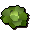 Cabbage |
Master Farmer Bought/Stolen from Olivia Monster drop |
7 |
10 | 11.5 |
![[image]](../../img/main/kbase/items/seeds/tomato.gif) Tomato seeds |
Tomato plant | ![[image]](../../img/main/kbase/items/offspring/tomato.gif) Tomato |
Master Farmer Bought/Stolen from Olivia Monster drop |
12 |
12.5 | 14 |
![[image]](../../img/main/kbase/items/seeds/sweetcorn.gif) Sweetcorn seeds Sweetcorn seeds |
Sweetcorn plant | ![[image]](../../img/main/kbase/items/offspring/sweetcorn.gif) Sweetcorn |
Master Farmer Bought/Stolen from Olivia Monster drop |
20 |
17 | 19 |
| 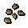 Strawberry seeds |
Strawberry plant | 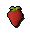 Strawberry |
Master Farmer Bought/Stolen from Olivia Monster drop |
31 |
26 | 29 |
![[image]](../../img/main/kbase/items/seeds/watermelon.gif) Watermelon seeds |
Watermelon plant | ![[image]](../../img/main/kbase/items/offspring/watermelon.gif) Watermelon |
Master Farmer Bought/Stolen from Olivia Monster drop |
47 |
48.5 | 54.5 |
Flowers
| Seed | Plant | Produce | Acquired From |
Level Required |
Planting Experience |
Harvesting Experience |
![[image]](../../img/main/kbase/items/seeds/marigold.gif) Marigold seeds |
Marigold | ![[image]](../../img/main/kbase/items/offspring/marigolds.gif) Marigold |
Master Farmer Bought/Stolen from Olivia Monster drop |
2 |
8.5 | 47 |
![[image]](../../img/main/kbase/items/seeds/rosemary.gif) Rosemary seeds |
Rosemary | ![[image]](../../img/main/kbase/items/offspring/rosemary.gif) Rosemary |
Master Farmer Bought/Stolen from Olivia Monster drop |
11 |
12 | 66.5 |
![[image]](../../img/main/kbase/items/seeds/nasturtium.gif) Nasturtium seeds Nasturtium seeds |
Nasturtium | ![[image]](../../img/main/kbase/items/offspring/nasturtium.gif) Nasturtium |
Master Farmer Stolen from Olivia's stall Monster drop |
24 |
19.5 | 111 |
![[image]](../../img/main/kbase/items/seeds/woad.gif) Woad seeds |
Woad | ![[image]](../../img/main/kbase/items/offspring/woad.gif) Woad leaves |
Master Farmer | 25 |
20.5 | 115.5 |
![[image]](../../img/main/kbase/items/seeds/limpwurt.gif) Limpwurt seeds Limpwurt seeds |
Limpwurt | ![[image]](../../img/main/kbase/items/offspring/limpwurt.gif) Limpwurt root |
Master Farmer Monster drop |
26 |
21.5 | 120 |
![[image]](../../img/main/kbase/items/seeds/lily_seed.gif) White lily seeds |
White lily | ![[image]](../../img/main/kbase/items/offspring/lily.gif) White lily |
Wyson, if holding the Falador shield 3 when trading in mole skins | 52 |
50 | 250 |
Herbs
| Seed | Plant | Produce | Acquired From |
Level Required |
Planting Experience |
Harvesting Experience |
![[image]](../../img/main/kbase/items/seeds/guam.gif) Guam seeds |
Guam | ![[image]](../../img/main/kbase/items/primary_ingredients/guam2.gif) Guam |
Master Farmer Monster drop |
9 |
11 | 12.5 |
![[image]](../../img/main/kbase/items/seeds/marrentil.gif) Marrentill seeds |
Marrentill | ![[image]](../../img/main/kbase/items/primary_ingredients/marrentill2.gif) Marrentill |
Master Farmer Monster drop |
14 |
13.5 | 15 |
![[image]](../../img/main/kbase/items/seeds/tarromin.gif) Tarromin seeds |
Tarromin | ![[image]](../../img/main/kbase/items/primary_ingredients/tarromin2.gif) Tarromin |
Master Farmer Monster drop |
19 |
16 | 18 |
![[image]](../../img/main/kbase/items/seeds/harralander.gif) Harralander seeds |
Harralander | ![[image]](../../img/main/kbase/items/primary_ingredients/harralander2.gif) Harralander |
Master Farmer Monster drop |
26 |
21.5 | 24 |
![[image]](../../img/main/kbase/items/seeds/goutweed.gif) Goutweed tuber |
Goutweed | 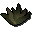 Goutweed |
Tai Bwo Wannai Cleanup | 29 |
105 | 45 |
![[image]](../../img/main/kbase/items/seeds/ranarr.gif) Ranarr seeds |
Ranarr | ![[image]](../../img/main/kbase/items/primary_ingredients/ranarr2.gif) Ranarr |
Master Farmer Monster drop |
32 |
27 | 30.5 |
![[image]](../../img/main/kbase/skills/summoning/items/spirit_weed_seed.gif) Spirit weed seeds |
Spirit weed | ![[image]](../../img/main/kbase/skills/summoning/items/spirit_weed.gif) Spirit weed |
Monster drop | 36 |
32 | 36 |
![[image]](../../img/main/kbase/items/seeds/toadflax.gif) Toadflax seeds |
Toadflax | ![[image]](../../img/main/kbase/items/primary_ingredients/toadflax2.gif) Toadflax |
Master Farmer Monster drop |
38 |
34 | 38.5 |
![[image]](../../img/main/kbase/items/seeds/irit.gif) Irit seeds |
Irit | ![[image]](../../img/main/kbase/items/primary_ingredients/irit2.gif) Irit |
Master Farmer Monster drop |
44 |
43 | 48.5 |
![[image]](../../img/main/kbase/items/seeds/wergali.gif) Wergali seeds |
Wergali | Wergali |
Vinesweeper Monster drop |
46 |
52.8 | 52.8 |
![[image]](../../img/main/kbase/items/seeds/avantoe.gif) Avantoe seeds |
Avantoe | ![[image]](../../img/main/kbase/items/primary_ingredients/avantoe2.gif) Avantoe |
Master Farmer Monster drop |
50 |
54.5 | 61.5 |
![[image]](../../img/main/kbase/items/seeds/kwuarm.gif) Kwuarm seeds |
Kwuarm | ![[image]](../../img/main/kbase/items/primary_ingredients/kwuarm2.gif) Kwuarm |
Master Farmer Monster drop |
56 |
69 | 78 |
![[image]](../../img/main/kbase/items/seeds/snapdragon.gif) Snapdragon seeds |
Snapdragon | ![[image]](../../img/main/kbase/items/primary_ingredients/snapdragon2.gif) Snapdragon |
Master Farmer Monster drop |
62 |
87.5 | 98.5 |
![[image]](../../img/main/kbase/items/seeds/cadantine.gif) Cadantine seeds |
Cadantine | ![[image]](../../img/main/kbase/items/primary_ingredients/cadantine2.gif) Cadantine |
Master Farmer Monster drop |
67 |
106.5 | 120 |
![[image]](../../img/main/kbase/items/seeds/lantadyme.gif) Lantadyme seeds |
Lantadyme | ![[image]](../../img/main/kbase/items/primary_ingredients/lantadyme2.gif) Lantadyme |
Master Farmer Monster drop |
73 |
134.5 | 151.5 |
![[image]](../../img/main/kbase/items/seeds/dwarf_weed.gif) Dwarf weed seeds Dwarf weed seeds |
Dwarf weed | ![[image]](../../img/main/kbase/items/primary_ingredients/dwarfweed2.gif) Dwarf weed |
Master Farmer Monster drop |
79 |
170.5 | 192 |
![[image]](../../img/main/kbase/items/seeds/torstol.gif) Torstol seeds |
Torstol | ![[image]](../../img/main/kbase/items/primary_ingredients/torstol2.gif) Torstol |
Master Farmer Monster drop |
85 |
199.5 | 224.5 |
Hops
| Seed | Plant | Produce | Acquired From |
Level Required |
Planting Experience |
Harvesting Experience |
| 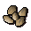 Barley seeds |
Barley | ![[image]](../../img/main/kbase/items/offspring/barley.gif) Barley |
Master Farmer Bought/Stolen from Olivia Monster drop |
3 |
8.5 | 9.5 |
![[image]](../../img/main/kbase/items/seeds/hammerstone.gif) Hammerstone seeds |
Hammerstone hops | ![[image]](../../img/main/kbase/items/seeds/hammerstone_hops.gif) Hammerstone hops |
Master Farmer Bought/Stolen from Olivia Monster drop |
4 |
9 | 10 |
![[image]](../../img/main/kbase/items/seeds/asgarnian.gif) Asgarnian seeds |
Asgarnian hops | ![[image]](../../img/main/kbase/items/seeds/asgarnian_hops.gif) Asgarnian hops |
Master Farmer Bought/Stolen from Olivia Monster drop |
8 |
10.5 | 12 |
![[image]](../../img/main/kbase/items/seeds/jute.gif) Jute seeds |
Jute | ![[image]](../../img/main/kbase/items/offspring/jute_fibre.gif) Jute fibre |
Master Farmer Bought/Stolen from Olivia Monster drop |
13 |
13 | 14.5 |
![[image]](../../img/main/kbase/items/seeds/yanillian.gif) Yanillian seeds |
Yanillian hops | ![[image]](../../img/main/kbase/items/seeds/yanillian_hops.gif) Yanillian hops |
Master Farmer Bought/Stolen from Olivia Monster drop |
16 |
14.5 | 16 |
![[image]](../../img/main/kbase/items/seeds/krandorian.gif) Krandorian seeds |
Krandorian hops | ![[image]](../../img/main/kbase/items/seeds/krandorian_hops.gif) Krandorian hops |
Master Farmer Bought/Stolen from Olivia Monster drop |
21 |
17.5 | 19.5 |
| 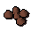 Wildblood seeds |
Wildblood hops | 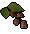 Wildblood hops |
Master Farmer Bought/Stolen from Olivia Monster drop |
28 |
23 | 26 |
Bushes
| Seed | Plant | Produce | Acquired From |
Level Required |
Planting Experience |
Harvesting Experience |
Check-health Bonus |
![[image]](../../img/main/kbase/items/seeds/redberry.gif) Redberry seeds |
Redberry bush | ![[image]](../../img/main/kbase/items/secondary_ingredients/redberries.gif) Redberries |
Master Farmer Monster drop |
10 |
11.5 | 4.5 | 64 |
![[image]](../../img/main/kbase/items/seeds/cadavaberry.gif) Cadavaberry seeds |
Cadavaberry bush | ![[image]](../../img/main/kbase/items/secondary_ingredients/cadavaberries.gif) Cadavaberries |
Master Farmer Monster drop |
22 |
18 | 7 | 102.5 |
![[image]](../../img/main/kbase/items/seeds/dwellberry.gif) Dwellberry seeds |
Dwellberry bush | ![[image]](../../img/main/kbase/items/offspring/dwellberries.gif) Dwellberries |
Master Farmer Monster drop |
36 |
31.5 | 12 | 177.5 |
![[image]](../../img/main/kbase/items/seeds/jangerberry.gif) Jangerberry seeds |
Jangerberry bush | ![[image]](../../img/main/kbase/items/secondary_ingredients/jangerberries.gif) Jangerberries |
Master Farmer Monster drop |
48 |
50.5 | 19 | 284.5 |
![[image]](../../img/main/kbase/items/seeds/whiteberry.gif) Whiteberry seeds |
Whiteberry bush | ![[image]](../../img/main/kbase/items/secondary_ingredients/whiteberries.gif) Whiteberries |
Master Farmer Monster drop |
59 |
78 | 29 | 437.5 |
![[image]](../../img/main/kbase/items/seeds/poisonivy.gif) Poison ivy seeds |
Poison ivy bush | ![[image]](../../img/main/kbase/items/secondary_ingredients/poisonivy_berries.gif) Poison ivy berries |
Master Farmer Monster drop |
70 |
120 | 45 | 674 |
Fruit Trees
| Seed | Plant | Produce | Acquired From |
Level Required |
Planting Experience |
Harvesting Experience |
Check-health Bonus |
![[image]](../../img/main/kbase/items/seeds/apple.gif) Apple seeds |
Apple tree | ![[image]](../../img/main/kbase/items/offspring/apple.gif) Apple |
Birds' nest | 27 |
22 | 8.5 | 1,199.5 |
![[image]](../../img/main/kbase/items/seeds/banana.gif) Banana tree seeds |
Banana tree | ![[image]](../../img/main/kbase/items/offspring/banana.gif) Banana |
Birds' nest | 33 |
28 | 10.5 | 1,750.5 |
![[image]](../../img/main/kbase/items/seeds/orange.gif) Orange seeds |
Orange tree | ![[image]](../../img/main/kbase/items/offspring/orange.gif) Orange |
Birds' nest | 39 |
35.5 | 13.5 | 2,470.2 |
![[image]](../../img/main/kbase/items/seeds/curry.gif) Curry seeds |
Curry tree | 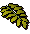 Curry leaf |
Birds' nest | 42 |
40 | 15 | 2,906.9 |
![[image]](../../img/main/kbase/items/seeds/pineapple.gif) Pineapple seeds |
Pineapple tree | ![[image]](../../img/main/kbase/items/offspring/pineapple.gif) Pineapple |
Birds' nest | 51 |
57 | 21.5 | 4,605.7 |
![[image]](../../img/main/kbase/items/seeds/papaya.gif) Papaya seeds |
Papaya tree | ![[image]](../../img/main/kbase/items/offspring/papaya.gif) Papaya |
Birds' nest Pawya trapping |
57 |
72 | 27 | 6,146.4 |
| 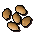 Palm tree seeds |
Palm tree | ![[image: coconut]](../../img/main/kbase/items/offspring/coconut.gif) Coconut |
Birds' nest | 68 |
110.5 | 41.5 | 10,150.1 |
Trees
| Seed | Plant | Produce | Acquired From |
Level Required |
Planting Experience |
Harvesting Experience |
Check-health Bonus |
![[image]](../../img/main/kbase/items/seeds/acorn.gif) Acorn |
Oak tree | 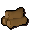 Oak logs |
Birds' nest | 15 |
14 | n/a | 467.3 |
![[image]](../../img/main/kbase/items/seeds/willow.gif) Willow seeds |
Willow tree | ![[image]](../../img/main/kbase/items/logs/willow_logs.gif) Willow logs |
Birds' nest | 30 |
25 | n/a | 1,456.3 |
| 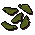 Maple seeds |
Maple tree | ![[image]](../../img/main/kbase/items/logs/maple_logs.gif) Maple logs |
Birds' nest | 45 |
45 | n/a | 3,403.4 |
![[image]](../../img/main/kbase/items/seeds/yew.gif) Yew seeds |
Yew tree | ![[image]](../../img/main/kbase/items/logs/yew_logs.gif) Yew logs |
Birds' nest | 60 |
81 | n/a | 7,069.9 |
![[image]](../../img/main/kbase/items/seeds/magic.gif) Magic seeds |
Magic tree | ![[image]](../../img/main/kbase/items/logs/magic_logs2.gif) Magic logs |
Birds' nest | 75 |
145.5 | n/a | 13,768.3 |
Special Trees
| Seed | Plant | Produce | Acquired From |
Level Required |
Planting Experience |
Harvesting Experience |
Check-health Bonus |
![[image]](../../img/main/kbase/skills/summoning/items/evil_turnip_seed.gif) Evil turnip seeds |
Evil turnip | ![[image]](../../img/main/kbase/skills/summoning/items/evil_turnip.gif) Evil turnip |
Master Farmer Monster drop |
42 |
41 | 46 | n/a |
![[image]](../../img/main/kbase/items/seeds/mushroom.gif) Bittercap mushroom seeds |
Bittercap mushroom | ![[image]](../../img/main/kbase/items/offspring/bittercap_mushroom.gif) Bittercap mushroom |
Master Farmer Monster drop |
53 |
61.5 | 57.7 | n/a |
![[image]](../../img/main/kbase/items/seeds/cactus.gif) Cactus seeds |
Cactus | 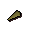 Cactus spine |
Master Farmer Monster drop |
55 |
66.5 | 25 | 374 |
![[image]](../../img/main/kbase/items/seeds/belladonna.gif) Belladonna seeds |
Belladonna | ![[image]](../../img/main/kbase/items/offspring/nightshade.gif) Nightshade |
Master Farmer Monster drop |
63 |
91 | 512 | n/a |
![[image]](../../img/main/kbase/items/seeds/calquat.gif) Calquat seeds |
Calquat tree | ![[image]](../../img/main/kbase/items/offspring/calquat.gif) Calquat |
Birds' nest | 72 |
129.5 | 48.5 | 12,096 |
![[image]](../../img/main/kbase/items/seeds/spirit.gif) Spirit tree seeds |
Spirit tree | n/a | Birds' nest | 83 |
199.5 | n/a | 19,301.8 |
Click here to view the Farming FAQs

More articles in
Farming (Members Only)
|
|
|
Further Help
If this article does not help you, you may find the following sections of the RuneScape site helpful:
|
|